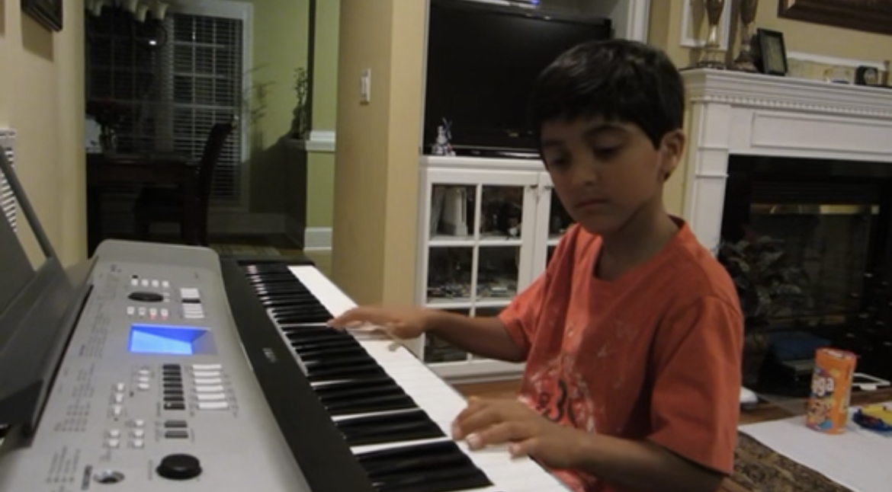
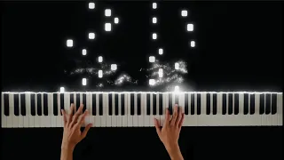
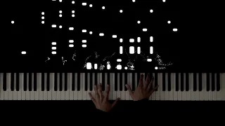

My Piano Journey

My journey as a pianist began when I was just five years old. Like many children, my parents enrolled me in piano lessons early, as young brains are malleable and I seemed to show the makings of a prodigy.
Throughout my childhood, I studied under a strict teacher who shaped me into a competitive pianist, annually achieving maximum ratings in North Carolina’s state competitions and music federations.
Despite the accolades and recognition, it felt like something was missing. The strict nature and pressure of competitions began to weigh on me. Each year, judges confined students to a predetermined list of technically demanding pieces that emphasized precision over passion.

Upon graduating high school, I decided to quit competitive piano and stop taking lessons. Instead, I shifted my focus to learning music I loved–orchestral arrangements of popular media such as Star Wars, Attack on Titan, and more–as well as the unique techniques to produce that sound. This conscious shift entirely changed my perspective on learning. Following this change in focus, I saw both my technical ability and fundamental understanding of music skyrocket at a pace I’d never experienced before.
With this newfound passion for a popular niche, I decided to share my abilities with the public. In January of 2023, I created a YouTube channel called RK Piano. At first, my intention was to record performances of pieces I learned for my own viewing. However, after gaining some public traction with a medley from the movie Interstellar, I realized I could provide something special with my knowledge and passion.

When summertime arrived and school ended, I had the necessary time to enhance not only my recording setup and strategy as a creator, but my repertoire as well. I began making tutorial-style content on pieces from popular composers such as Ludovico Einaudi and Hans Zimmer. By committing to content creation, I managed to consistently improve with every post, soon breaking out with my viral video: “Nuvole Bianche - Ludovico Einaudi.” This video got my name out there and grew my channel exponentially, propelling me towards the broader audience I had sought from the beginning.

Looking ahead, I envision expanding my YouTube channel to offer the content and assurance that I didn’t get when I had my own personal conflict with the piano. I aim to show the technical and interpretive significance of not only classical music, but modern composers and soundtracks alike. I hope to inspire others to pursue their musical passion regardless of the pressures that exist to shape their musical path in any which way.